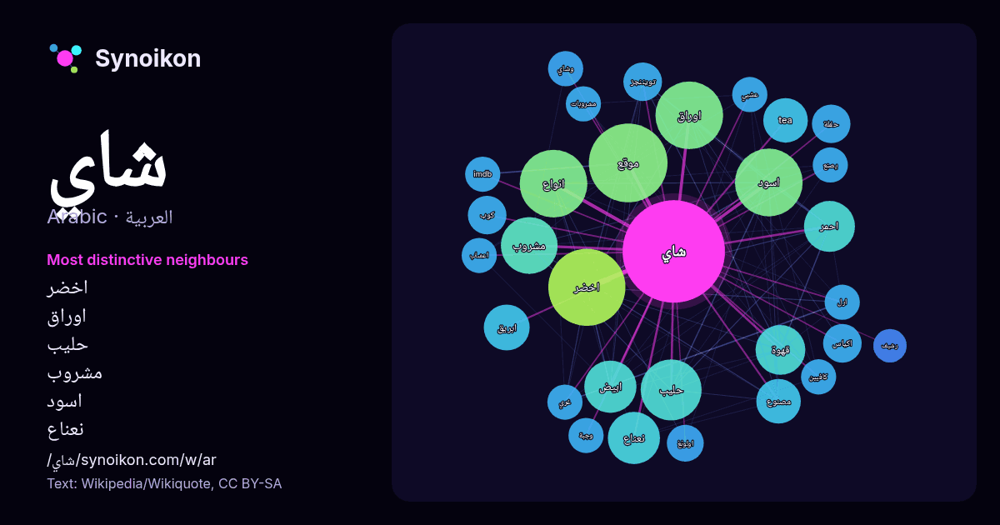

العربية · قائمة كلمات اليوم
شاي
“tea” · الكلمات الموجودة حولها في 680 ورودًا من ويكيبيديا, Wikiquote.

الجيران الأكثر تميّزًا
- اخضر 39×
- اوراق 28×
- حليب 27×
- مشروب 26×
- اسود 24×
- نعناع 23×
- موقع 19×
- قهوة 19×
- ابريق 18×
- tea 17×
- مصنوع 16×
- انواع 16×
- احمر 14×
- ابيض 14×
- تويننجز 13×
- اكياس 13×
- كوب 12×
- حفلة 12×
- اولونغ 12×
- وشاي 11×
× = كم مرة أكثر مما في نصوص ويكيبيديا العامة.
الجيران الأكثر تكرارًا
- موقع 50
- اخضر 48
- اسود 37
- انواع 37
- اوراق 37
- حليب 30
- مشروب 26
- ابيض 22
- نعناع 22
- احمر 21
- نوع 21
- قهوة 20
- ابريق 17
- tea 16
- عادة 16
- مصنوع 16
- صين 15
- معروف 13
- اكياس 12
- تويننجز 12
في السياق
- وفيتنام في مراكز ثانوية من حيث إنتاج الشاي. شاي إرل غري أتاي الشاي الأخضر شاي أحمر تويننجز قهوة شاي عدني شاي كرك شاي ليدي غراي Heiss، Mary Lou؛ Heiss، Robert Wikipedia snippets · شاي
- كلمة أردية تعني المضاعف أو الجامد. شاي مصالحة (/ tʃaɪ / ؛ مضاءة «شاي خليط التوابل») هو مشروب شاي مصنوع عن طريق غلي الشاي الأسود في الحليب والماء مع خليط Wikipedia snippets · شاي كرك
- الشاي الأخرى. تم إطلاق ليبتون كلير بخمسة أنواع مختلفة، شاي إرل غري، شاي الإفطارالإنجليزي، شاي الخوخ والمانجو، الشاي الأخضر، المندرين البرتقالي، شاي النعناع Wikipedia snippets · ليبتون
- هووجيشا (Houjicha) كوكيشا (Kukicha) جينمايشا (Genmaicha) شاي أحمر أتاي تويننجز شاي أبيض دراسة: الشاي الأخضر يقاوم السرطان http://www.almania.info/9H نسخة Wikipedia snippets · شاي أخضر
- منه لبيعه مفروطاً، ولكن بعض الشركات تبيع أكياس شاي تحتوي على أوراق شاي كاملة. كانت أشكال أكياس الشاي التقليدية مربعة أو مستطيلة. عادة ما تُصنع من ورق Wikipedia snippets · كيس شاي
- شاي كويتي كوب من شاي القرفة تعديل - تعديل مصدري - تعديل ويكي بيانات الشاي الكويتي له عدة أنواع ذات أطعمة مختلفة، يمكن شربه في أي وقت وهناك أوقات مميزة Wikipedia snippets · شاي كويتي
- دانغ، شاي مر جدا مصنوع من أوراق البلوط الأخضر الشاي الصيني بطباط شاي الأقحوان، مصنوع من الزهور المجففة، ويحظى بشعبية مع ديمسوم الصينية القرفة شاي الكوكا، Wikipedia snippets · شاي أعشاب
- للشاي: تيتلي (4.0%). يحتوي الشاي الأسود غير المحلى والخالي من الإضافات على كميات ضئيلة من السعرات الحرارية والبروتينات والصوديوم والدهون. فنجان شاي بيالة Wikipedia snippets · شاي أحمر
كلمات أخرى
- أغنية
- إله
- تاريخ
- جبل
- جرس
- جزيرة
- جسر
- حديقة
- حصان
- حقيقة
- حياة
- خبز
- خريطة
- خريف
- ذهب
- زمن
- ساعة
- شتاء
- صحة
- صحراء
- صمت
- صيف
- طبيعة
- طريق
- طعام
- ظل
- عائلة
- عاصفة
- عسل
- علم
- عمل
- غابة
- فن
- قطار
- قطة
- قلب
- قوة
- كلب
- لغة
- ماء
- مال
- مدينة
- مرآة
- مطر
- ملح
- مناخ
- موت
- نجم
- والدة
حُسبت مسبقًا في 2026-10-09 بالإعدادات الافتراضية (±5 كلمات، مدوّنة متوسطة). يمكن للخريطة التفاعلية تحديثها ببيانات حية.
واجهة مترجمة آليًا؛ نرحب بالتصحيحات.